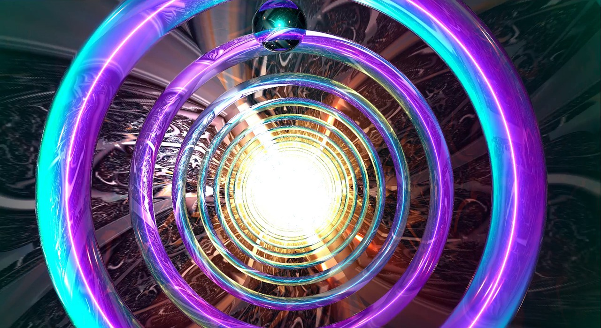

A Glimpse into the Beginning of the Universe
The origins of the universe have long fascinated scientists, philosophers, and curious minds alike. Among the most compelling explanations is the Big Bang Theory, which posits that the universe began as a singular, incredibly dense, and hot point approximately 13.8 billion years ago. This singularity then rapidly expanded, leading to the formation of matter, galaxies, stars, and planets, shaping the cosmos as we know it today.
Renowned physicist Stephen Hawking, in his seminal work "The Theory of Everything," eloquently explores the implications of the Big Bang Theory. Hawking's contributions to cosmology have significantly enhanced our understanding of the universe's beginnings. He proposed that time itself started with the Big Bang, eliminating the need for a "before" and making the question of what happened prior to the Big Bang irrelevant. According to Hawking, the laws of physics as we understand them break down at the singularity, indicating that a different framework is required to fully comprehend the initial moments of the universe. Hawking's insights stem from a combination of theoretical physics and observational data. He emphasized that the Big Bang was not an explosion in space, but rather an expansion of space itself. This expansion continues today, as evidenced by the fact that galaxies are moving away from each other. Hawking also delved into the concepts of black holes and their relation to the Big Bang, suggesting that both phenomena involve singularities where conventional physics ceases to apply.
Modern scientific advancements have provided substantial support for the Big Bang Theory. Observations from the Hubble Space Telescope have shown that galaxies are moving away from us, suggesting that the universe is still expanding. This phenomenon is consistent with the Big Bang model. Additionally, the discovery of cosmic microwave background radiation, a faint glow left over from the early universe, serves as a powerful piece of evidence corroborating the theory. This radiation, detected by the COBE satellite in 1992, provides a snapshot of the universe just 380,000 years after the Big Bang, offering crucial insights into its early state. Furthermore, measurements of the abundance of light elements, such as hydrogen, helium, and lithium, align with predictions made by the Big Bang nucleosynthesis theory. These elements were formed during the first few minutes of the universe's existence, further supporting the Big Bang model. The uniform distribution of these elements across the observable universe adds another layer of credibility to the theory.
However, the Big Bang Theory is not without its challenges. Some questions remain unanswered, such as the nature of dark matter and dark energy, which make up a significant portion of the universe yet remain mysterious. Dark matter is thought to be a form of matter that does not emit or interact with electromagnetic radiation, making it invisible and detectable only through its gravitational effects. Dark energy, on the other hand, is hypothesized to be responsible for the accelerated expansion of the universe. Despite extensive research, the exact nature of these components remains elusive.
Alternative theories have been proposed to explain the origins and expansion of the universe. The Steady State Theory, for example, suggests that the universe has no beginning or end and that new matter is continuously created to maintain a constant density as it expands. However, this theory has fallen out of favor due to the overwhelming evidence supporting the Big Bang. Another intriguing idea is the concept of a cyclic universe, where the cosmos undergoes endless cycles of expansion and contraction. While this theory addresses some of the issues related to the Big Bang, it still lacks the robust observational support that the Big Bang Theory enjoys.
In conclusion, the Big Bang Theory stands as the most widely accepted explanation for the origin of the universe. Stephen Hawking's work, along with modern astronomical observations, has strengthened its foundations. The theory elegantly explains the observable phenomena and aligns with a vast array of scientific data. However, the true nature of our universe's beginnings remains one of the greatest mysteries in science. As our technological capabilities and understanding of physics continue to grow, we may eventually unlock even deeper secrets about the cosmos's inception and evolution. Whether you believe the Big Bang Theory to be the definitive answer or remain skeptical, the journey to uncovering the truth continues to captivate and inspire. The decision is ultimately yours. The ongoing pursuit of knowledge and the quest to understand our universe's origins is a testament to humanity's unyielding curiosity and determination. As we stand on the shoulders of giants like Stephen Hawking, we edge ever closer to comprehending the profound mysteries of the cosmos.